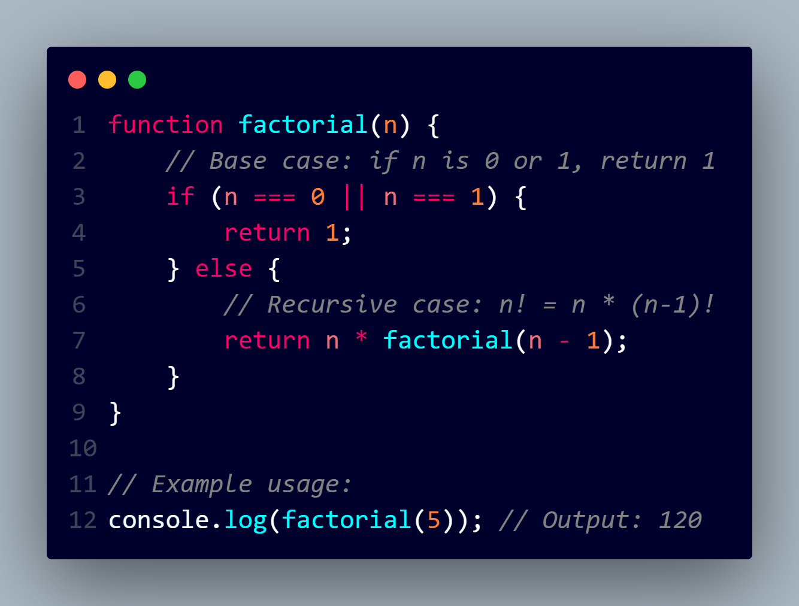

RECURSION
Recursion is a programming concept where a function calls itself in order to solve a problem. In JavaScript, you can use recursion to solve problems that can be broken down into smaller, similar sub-problems. Here's a simple example of a recursive function to calculate the factorial of a number:

Lexical Scope:
Lexical scope refers to how variable names are resolved in nested functions based on the physical structure of the code.
Variables are scoped based on where they are declared in the source code, and their visibility is determined by their location in the code.
In a lexically scoped language like JavaScript, inner functions can access variables from their outer functions, creating a chain of scopes.
Closures:
A closure is created when a function is defined within another function, and the inner function retains access to the outer function's variables even after the outer function has finished executing.
Closures allow functions to "remember" the scope in which they were created, preserving the state of variables.
Closures are a natural outcome of lexical scope when functions are returned from other functions or passed as arguments.